初めに
この記事では、下記のシークエンスを解説します。
- あるアバターから、頭部を切り出す
- ある素体（アバターのうち胴体）と、切り出した頭部を結合する
また手順は全てUnity上で行い、Blenderは使用いたしません！ （重要。筆者はまだBlenderと和解できておりません 🤔 ）
- 用意すべきもの
- アバター
- 素体
今回は一例として、下記の構成で説明します。
- 「用意すべきもの」の構成
- アバター => NecoMaid-RICH
- 素体 => QuQu日帰り温泉プラン
Special Thanks
まず初めに。
この記事は、先日えくり様に教えていただいたことを、そのまま文字化したものです。 記事化の許可を快く許していただきました。 ありがとうございます！
えくり様はアバター改変の有償サポートをしてくださっています！
「改変したアバターを納入」する形ではなく「アバター改変のノウハウ教えてくださる」のが特徴です。 ここで得た知識は、次から自分で生かせるので、大変お得になっています。
☆えくり流改変サポート☆
— えくり＠改変サポート受付窓口 (@EkuriVr) January 19, 2020
あなたのカワイイ･カッコイイを形にするお手伝いをいたします！
アバターを弄りたいけどやり方がわからない･･･
Unityとか複雑でよくわからない･･･
自分で調べる時間がもったいない！
そんな方にオススメです！気軽にご相談ください！#VRC #VRChat #Unity #VRoid pic.twitter.com/zzpl8cjtC7
気になった方はぜひ。おすすめです！
下準備
まずは下記を行っていきます。
- 基盤のインポート
- VRCSDK2
- DynamicBone（必要な場合）
- UTS2等（必要な場合）
「基盤のインポート」については記事がありふれていますので、説明を省略します。
素体の準備
素体のインポート
素体の.fbxを含んだフォルダごと、ProjectにD&Dします。 （今回の場合はQuQuonsenです。）
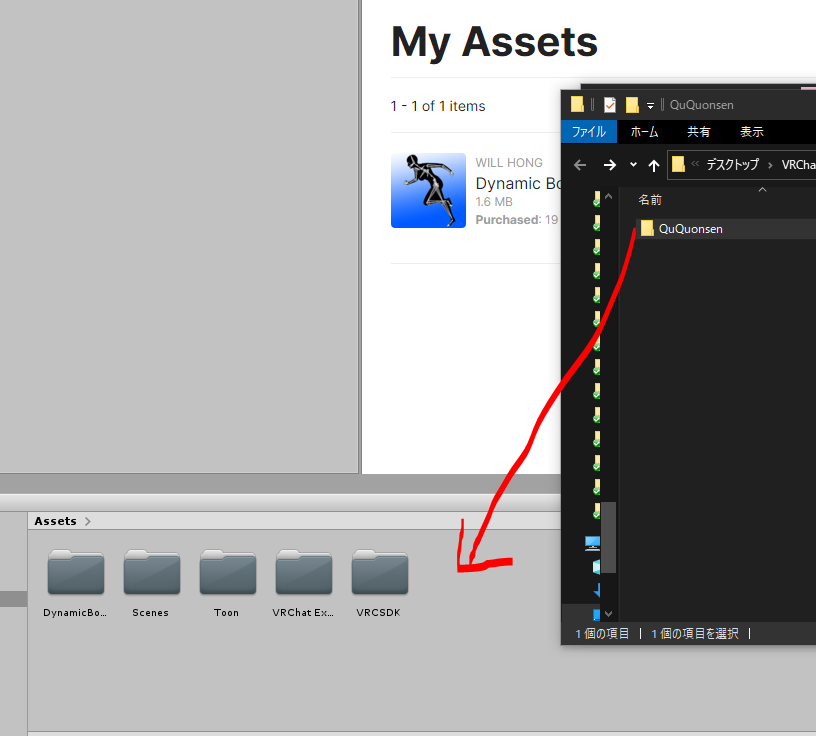
（ QuQuonsenの場合、 このようなよくわからないダイアログがでてきたので、 とりあえずFix nowしました。
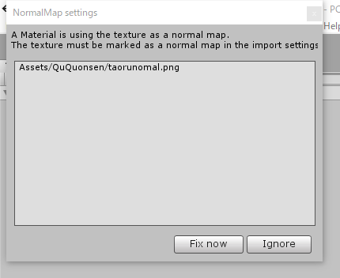 ）
素体fbxのHumanoid化
ProjectでAssets/QuQuonsen/onsenをクリックすると、 Inspecorが下記のような状態になります。
そこでRigを選択し、 ’Animation Type’をHumanoidに変更。 その後Applyを押します。
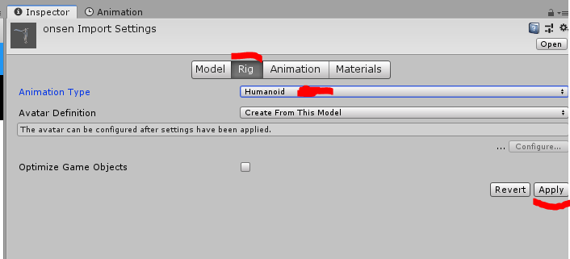
ここで’Configure’クリックすると、 Inspectorが次のような状態になります。
ここで各ボーンが正常に、 Humanoid形式に設定されているかが確認できます。
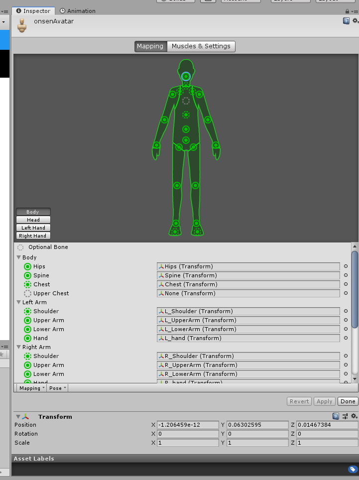
いずれかのボーンが正常に設定されていない場合、 そのボーン部分が赤く表示されます。 （次の画像は’Hips’が’None’に設定されてしまっている場合。）
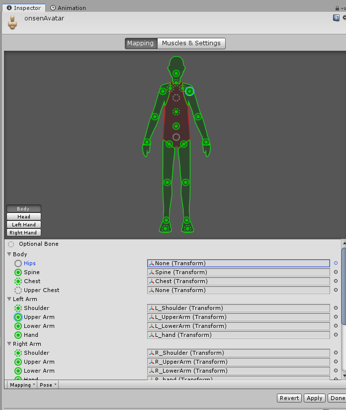
その場合は’Hierarchy’に表示されているアバターのボーン （今回の場合onsen(Clone)のArmature > Hips） をInspectorのHipsにD&Dしてあげてください。
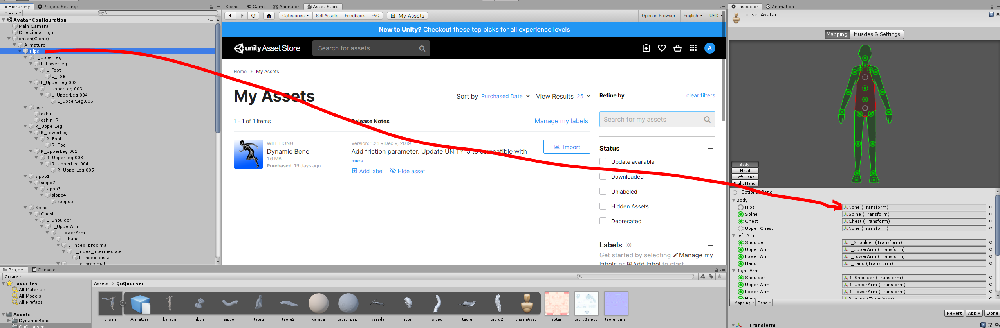
確認したら’Apply’あるいは’Revert’ & ’Done’を押して、元のInspector画面に戻りましょう。
素体fbxのMaterial調整
次にInspectorの’Materials’タブをクリックし、 LocationをUse External Materialした後、 またLocationをUse Embedded Materialに戻して、 そして’Apply’を押してください。
これはBlenderで作成したMaterialを、 Unityに引き継ぐために行うもの、 とのことです。
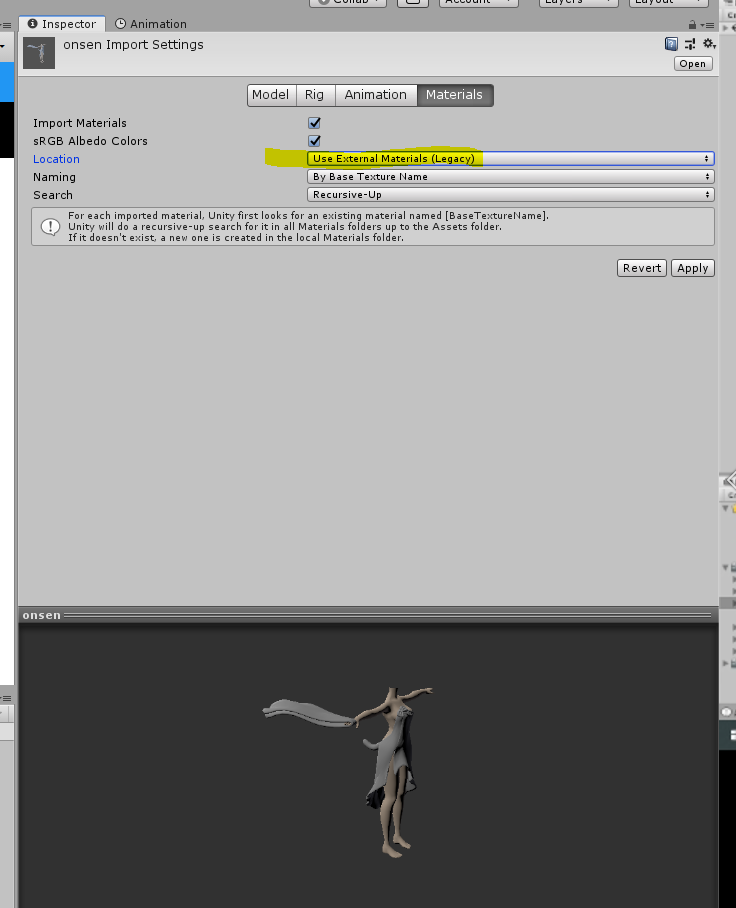
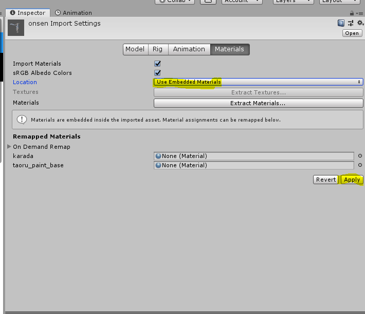
素体シェーダーの設定
さてようやくですが、 素体fbxをHierarchyに追加（D&D）しましょう。
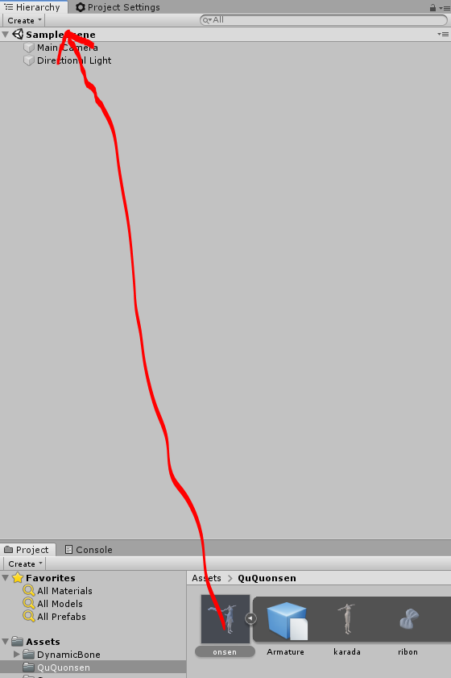
次にその素体配下の、 Armature以外のオブジェクトのシェーダーをUTS2のToon_DoubleShadeWithFeather等に変更します。
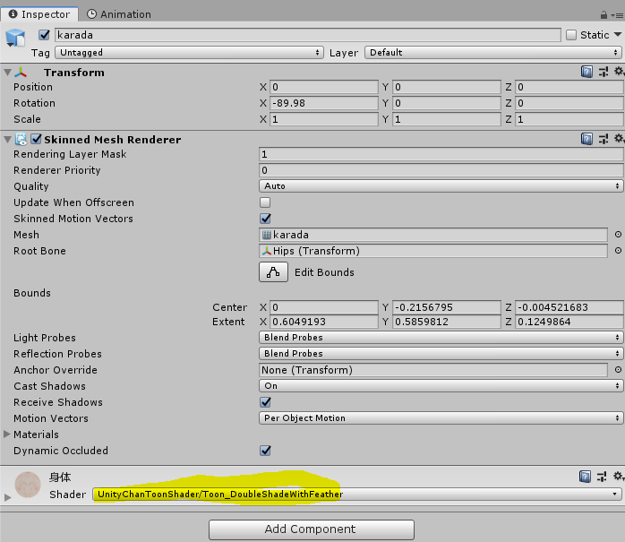
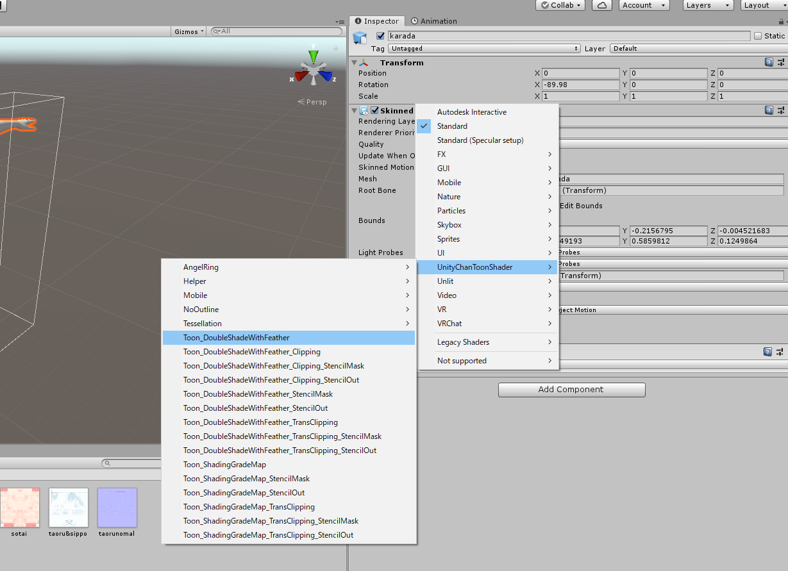
ここでシェーダーが変更できない場合があるようです。
僕は下記サイトを参考に
先ほど設定したMaterialsのLocationをUse External Materials (Legacy)に変更することで、 シェーダーを変更できるようにしました。
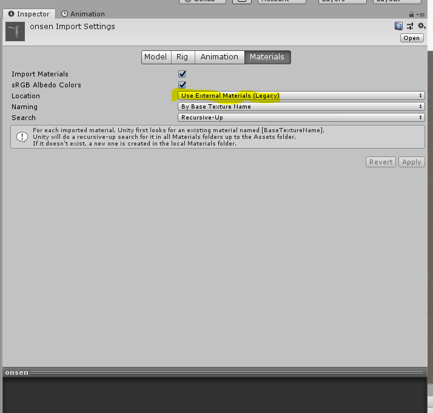
TODO: 続き書く
TODO: 各画像の幅を設定する
アバターのインポート
アバターの.fbxや.prefabをインポートします。 以下、NecoMaid-RICHちゃんの場合です。
NecoMaidRICH1.1.unitypackage（現時点での最新版）ファイルをUnityにインポートします。
TODO: 続き書く
💥💥💥💥💥💥💥💥💥💥💥💥💥
— ⿻あいや⿻ VRChat＆言語自作＆技術書典「せつラボ」 (@public_ai000ya) July 31, 2020
💥 Blenderと和解ガチャ発動！ 💥
💥💥💥💥💥💥💥💥💥💥💥💥💥
🆘⚠️💞 ﾄｩﾙﾙﾝ
⚠️💞⚠️ ﾄｩﾙﾝ
💞💞🆘 ﾄｩﾙﾝ
ﾄｩﾙﾙ ﾙﾙ ﾙﾙ……
🆘🆘🆘 ﾄﾞｰﾝ!!
✋✋✋✋✋
B l e n d e r と
和 解 で き ま せ ん
で し た
✋✋✋✋✋#VRChat
この記事はこちらから修正リクエストを送ることができます。
WIP【Blender未使用】UnityでVRChatアバターの素体（胴体）を入れ替える方法 - github
ゴミ箱ボタンの左にある、鉛筆ボタンを押してね！